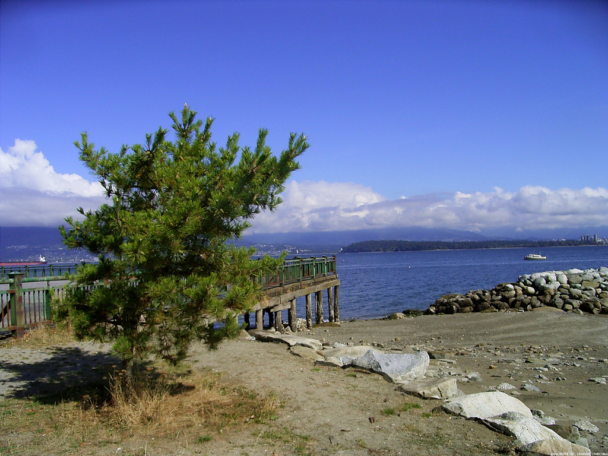
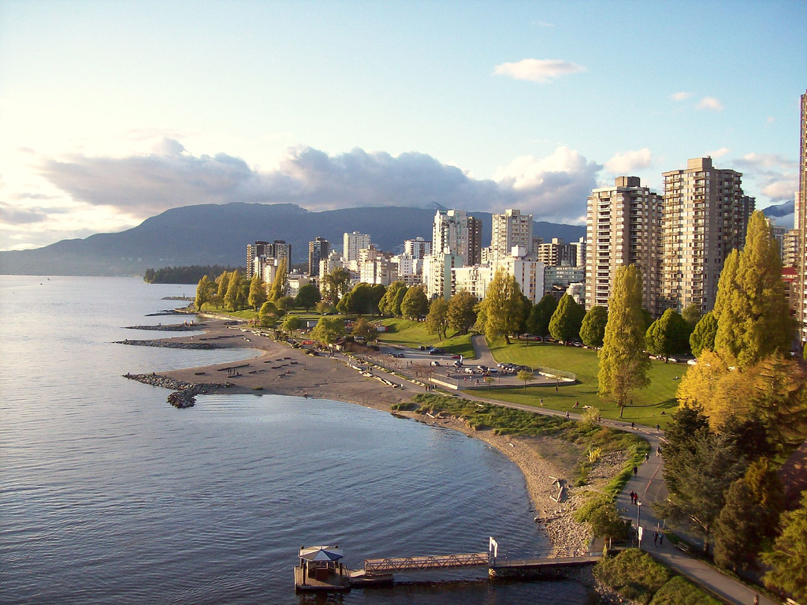

Canadian beaches
Jericho Beach
By Selmo, CC BY-SA 2.0, via Wikimedia Commons
{kind=link}
Jericho Beach, known originally as iy'a'l'mexw in Squamish, a Vancouver beach, is located west of the seaside neighbourhood of Kitsilano. It is surrounded by Jericho Beach Park, a grassy area with a pond, which is a picnic destination. Jericho Beach is the home of the Jericho Sailing Centre Association.
Etymology
The name Jericho Beach derives from Jeremiah Rogers, who ran a logging camp in the area in the 1860s, either as a corruption of "Jerry's Cove" or else as a corruption of his company's name, Jerry & Co.
Jericho Beach
The beach is home to concessions, soccer and baseball fields, picnic tables, public washrooms, among other amenities like beach volleyball nets. Also, there are lifeguards on duty for beach safety from late May to early September. It is home to the Jericho Works Yard for the Vancouver Parks Board, a youth hostel, the annual Vancouver Folk Music Festival and the Jericho Sailing Centre.
Jericho Beach Park
Jericho Beach Park is a park that is near Jericho Beach. The park includes a pond, a tennis court, and many picnic areas. Along with Locarno Beach Park (which is a park adjacent to Jericho Beach Park), Jericho Beach Park is home to many rabbits and other animals.
English Bay
By James , CC BY 2.0, via Wikimedia Commons
{kind=link}
English Bay is an open bay northwest of the Burrard Peninsula in British Columbia, Canada, extending from the headland between Siwash Rock and Prospect Point on Vancouver's Downtown peninsula in the northeast, to the northwestern tip of Point Grey in the southwest. The bay encompasses the coasts of Stanley Park, the West End, Kitsilano, West Point Grey and the University Endowment Lands, and makes up the southeastern portion of the Outer Burrard Inlet. There is a narrow inlet named False Creek at its eastern end.
Location
English Bay Beach, near the city's West End residential neighbourhood, is a popular sunbathing, swimming, and sunset-watching
beach in the downtown Vancouver area. Other downtown beaches facing English Bay include Sunset Beach, Second Beach, and Third Beach. Along the
south shore of the bay lie Kitsilano Beach, Jericho Beach, Locarno Beach, and the Spanish Banks beaches, while on the North Shore are Ambleside
Beach and various smaller cove-beaches in the city of West Vancouver. The beaches facing English Bay are a major tourist attraction all year long,
with the peak season being late summer.
The Vancouver Seawall runs all the way around English Bay from Stanley Park in the northeast around False Creek
at Point Grey facing the Strait of Georgia in the southwest. This is a favourite destination for walkers, runners, bicyclists,
and roller-bladers. (Note: the Seawall is one-way for cyclists and roller-bladers, running counter-clockwise from just east of
Lions Gate Bridge to Third Beach.)
English Bay Beach is host to a number of public events. The Celebration of Light is a fireworks competition that is held for
two weeks every summer (usually the last week in July and first week in August). While this competition often struggles to secure
funding, it has successfully run since 1990 and is the largest off-shore fireworks display in the world. Each winter it is the
host of Vancouvers' annual Polar Bear Swim and each summer the Vancouver Pride Parade and Festival is held on English Bay Beach.
History
In the late 19th and early 20th centuries, English Bay Beach was home to Vancouver's first official lifeguard,
the legendary Joe Fortes, who taught hundreds of the city's early residents how to swim, and patrolled the beach from his cabin on
its shore. Today, the waters of the bay are often dotted with hundreds of small pleasure boats, as well as huge freighters waiting
at anchor to load cargoes at Vancouver's port.
The beach was the site of an oil spill in Vancouver on April 8, 2015. The official cause of the spill has not been confirmed, but at
least 2700 litres of "bunker fuel" are known to have escaped from a cargo ship into the bay. The highly toxic oil[3] later washed up on
nearby beaches, creating a slick 15–20 cm thick. At least twenty seabirds were injured or affected by the spill,[4] but the full extent
of any environmental and economic damage is unknown at this early stage. The federal government was criticized for its response to
the spill, including the delay in notifying the public of the health hazard, by the mayor and premier, environmental scientists, and an
international shipping expert. Coast Guard officials defended the response, with regional director Assistant Commissioner Roger
Girouard saying, "it was exceptional"
The beaches were tested and most were reopened following a ten-day closure. While the water and soil at most of the beaches tested was found
not to have harmful levels of oil present, the government cautioned that "small amounts" of oil may remain, and urged people to be aware of the
possible hazard and avoid contact with any oil. The reopened beaches will continue to be tested and the need for further cleanup assessed as needed.
Rathtrevor Beach Provincial Park

By marneejill , CC BY-SA 2.0, via Wikimedia Commons
{kind=link}
Rathtrevor Beach Provincial Park is a provincial park in Parksville, British Columbia, Canada. Located at the east end of the town, the 347-hectare park features a two-kilometre long stretch of sandy beach, a stand of old-growth Douglas fir trees and 174 vehicle-accessible and 25 walk-in camping spaces. Popular year-round, the park is easily accessible from Highway 19. The sandy beach is the main attraction. At low tide, it stretches nearly a kilometre out into the Strait of Georgia.
Wildlife
The park is an important stopover area for migratory birds, notably brant geese, which use the beach as a staging area from March 1 to April 15.
Origin of the name
Rathtrevor takes its name from the Rath family who homesteaded on the land in the late 19th century. The family eventually established a private campground on the site, adding the "trevor" to give it a more romantic name. In 1967, the campground became a provincial park.
Establishment of the park
Rathtrevor Beach Park has a connection to Wells Gray Provincial Park in central British Columbia, Canada.
In the 1960s, Clearwater Timber Products, a major employer in Clearwater, just outside Wells Gray Park, was running out of timber
to supply the mill. On October 3, 1963, the Social Credit Government passed an order-in-council which stated the terms of an
agreement between the government and Clearwater Timber whereby the government received 47 hectares of Rathtrevor Beach, owned
by Clearwater Timber Products, in exchange for timber rights in 137 square km of southwestern Wells Gray Park. The beach
property was valued at $186,000, so the approved swap allowed for that value of timber to be removed from Wells Gray Park.
However, the stumpage fee was fixed at $1.50 per 100 cubic feet for fir, an extremely low price because the standard rate paid
by a logging company to the government was $16.90
An investigation of the deal in 1964 disclosed that the Rath family actually sold their property to Clearwater Timber Products in 1963
for only $150,000, yet within a month the government appraised the property at $186,000. An editorial in the Victoria Daily Times on March
24, 1964, pointed out that “the amount allocated by the government as the value of bargain-priced timber was equivalent to the highest
appraisal made on the Rathtrevor property”. Despite the suspicions raised by this investigation, the government granted an additional 65
square km of timber rights to Clearwater Timber in 1964, so its holdings now extended from north of the Flourmill Volcanoes to Mahood Lake.
On April 1, 1969, Bob Williams (a Member of the Legislative Assembly or M.L.A.) told the Legislature, "It seems questionable that a licence should
be granted for the company to run at will through Wells Gray Park at bargain basement prices." Former Kamloops M.L.A., Phil Gaglardi, was accused of
using his position as Highways Minister to interfere with the Department of Recreation and Conservation in the land swap and thus secure approval for
the deal. Williams summarized the loss to the government by pointing out that 204,000 cubic metres (7.2 million cubic feet) of timber had already been
cut, yielding $88,000 in stumpage fees applied to the Rathtrevor purchase. The logging company was nearly halfway through the deal in 1969. Up to that
year, the government could have collected a total of $670,613 on stumpage fees, or $l.6 million if the deal had been completed, instead of the $186,000
park site it did acquire. Williams called the arrangement “a glaring example of park mismanagement mixed with outside interference. What we are looking
at is between 50 and 60 Stanley Parks. What British Columbia, the public, is being left with is stumps.
By 1974, two years after the New Democratic Party had formed the government, the arrangement with Clearwater Timber was cancelled and the access road to
the Flourmill Volcanoes logging area was permanently closed by demolishing the Mahood River bridge. In the 40 years since, Rathtrevor Beach has become
one of British Columbia's most popular provincial campgrounds.